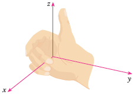
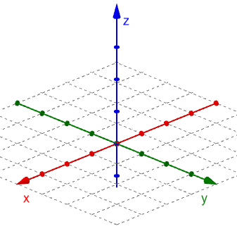
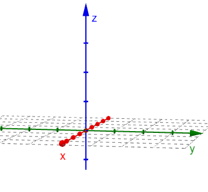

3D Space
Up to this point, probably all of the functions and graphs you have studied have been expressions of the form \(y = f(x)\) that were graphed on the \(xy\)-plane. All of the concepts and skills that you learned in Calculus I and II (derivatives, integrals, optimization, related rates, series, polar, conics, etc.) can be extended from the 2-dimensional space of x and y to 3-dimensional space. This is the foundational idea for this course. Since the world is in 3D, how do we do calculus in 3D?
If any point in the 2D \(xy\)-plane \(ℝ^2\) can be expressed as a coordinate pair \((x,y)\), then any point in 3D space \(ℝ^3\) can be expressed as a coordinate triple \((x,y,z)\). The \(z\)-coordinate represents how far a point is above or below the \(xy\)-plane. We can express 3D space as the set of all of these triples using the following notation.
\[ℝ^3 = \{(x,y,z) \, | \, x,y,z \in ℝ\}\]You would read this as "R 3 is the set of all triples (x, y, z) such that x, y, and z are Real numbers." The symbol \(\in\) means "element of," or that the x, y, and z values must be in \(ℝ\).
Use the following GeoGebra app to explore various aspects of 3D space. The initial appearance of the app is of the \(xy\)-plane. You can click-and-drag to rotate the view around. Use the selection boxes on the left to highlight the coordinate planes. You can also show the octants of 3D space, similar to the quadrants of the \(xy\)-plane. Lastly, you can view how a point appears in 3D space. You can change the coordinates of the point by moving the corresponding point on a coordinate axis.
There are many ways to orient the \(x\), \(y\), and \(z\) axes. We will use a right-hand rule, which is illustrated below. If the thumb on your right hand represents the \(z\)-axis, then your fingers would rotate from the \(x\)-axis through the \(y\)-axis as you curl your fingers into a fist.
Drawing the axes of 3D space on a 2D surface like a piece of paper requires us to use our imagination. We have to slightly alter our perspective on the 3D axes to make a sort of optical illusion. A couple options are illustrated below.
The image above shows the axes from a point of view centered in the first octant looking down on the origin with the \(x\)-axis extending downward to the left, the \(y\)-axis extending downward to the right, and the \(z\)-axis pointing upward. The image below shows the axes more from the side, where the y-axis is horizontal , the z-axis is vertical, and the x-axis extends forward as if it stretches out of your screen or up off the page.
The following video gives some examples of plotting 3D points as well as finding the distance and midpoint between two points.
From the above video, in \(ℝ^3\) we can compute the distance between two points \((x_1,y_1,z_1\)) and \((x_2,y_2,z_2\)) using the following formula.
\[d=\sqrt{(x_2-x_1)^2 + (y_2 - y_1)^2 + (z_2 - z_1)^2}\]We can also compute the midpoint of the segment between two points using the formula below.
\[\left( \frac{x_1+x_2}{2}, \frac{y_1+y_2}{2}, \frac{z_1+z_2}{2} \right)\]